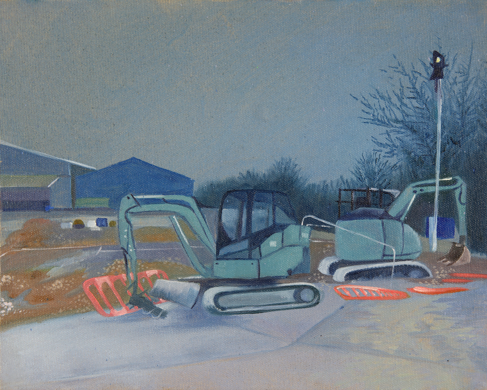

This series of works explores Marc Augé’s concept of ‘non-place’ in relation to the stagnation of Britain’s new towns, and the struggle to establish identity in an environment with no cultural or historical significance.The paintings depict spaces around my hometown of Stevenage, the first new town. Built in the 1940s to relieve crowding in war torn Britain, Stevenage—once advertised as a suburban utopia—is now a cultural wasteland of restaurant chains, bargain stores, and poorly-aged Brutalist architecture. Many of these self-contained commuter towns have deteriorated into 'non-places', with their sterile lack of character and suburban uniformity breeding isolated communities.I enjoy finding beauty in these bleak in-betweenlands. The cracks in the eerie artifice of suburban towns offer an honest depiction of the British landscape, far from picturesque rural convention.I am influenced by artists like George Shaw and David Rayson, while my process is informed by psychogeography and the act of walking as artistic practice. Made during my first year at university, the paintings also address personal loneliness and nostalgia for a home loved and loathed in equal measure.
Email